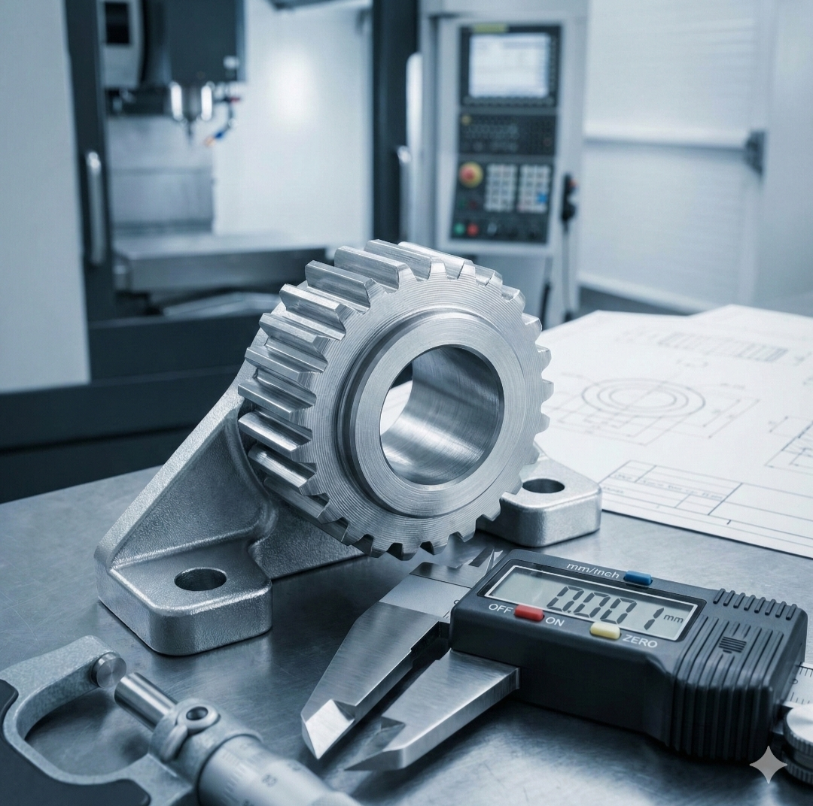

Selected Projects

Rotary Cup Sealing System
[span_12](start_span)Designed and prototyped a high-precision packaging machine, creating detailed BOMs to streamline manufacturing.[span_12](end_span)

Precision Component Manufacturing
[span_13](start_span)[span_14](start_span)Optimized setup for high-precision parts using CNC Lathe/Milling and validated with metrology tools.[span_13](end_span)[span_14](end_span)